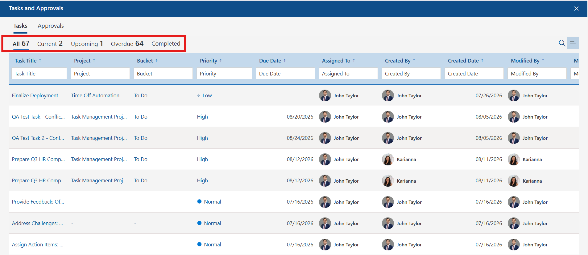
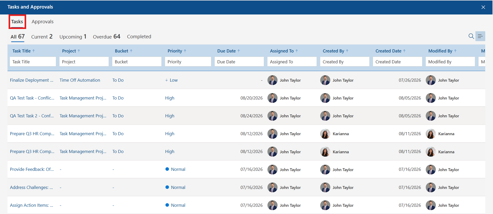
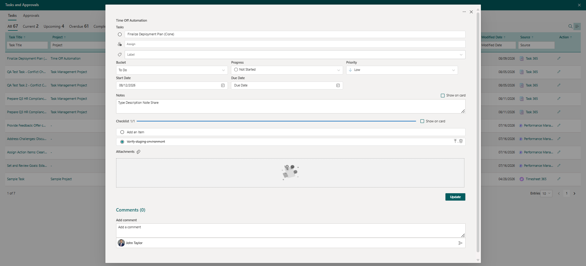
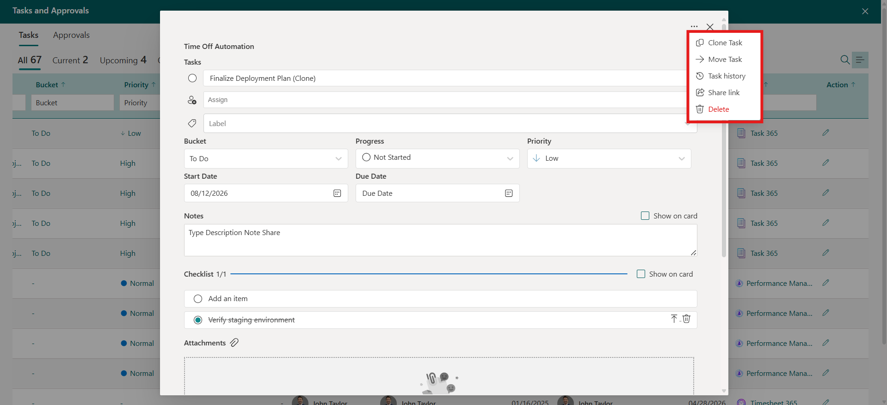
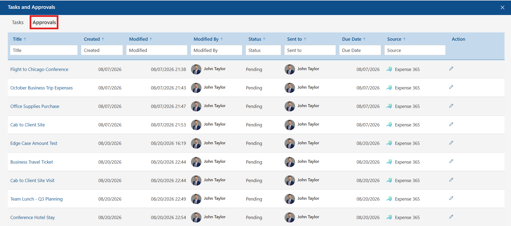
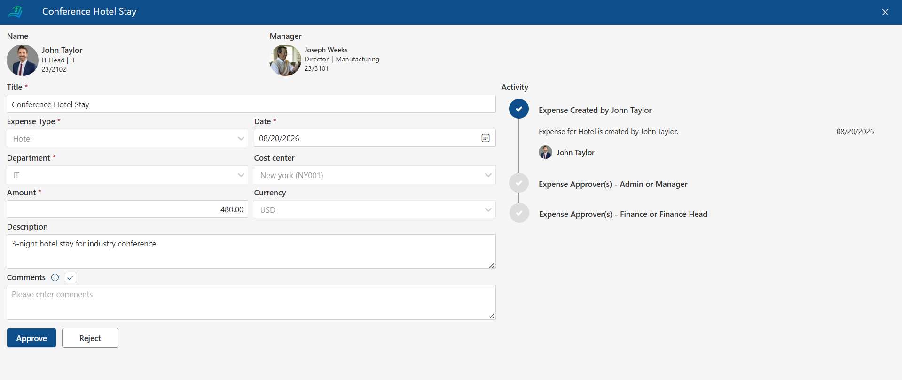
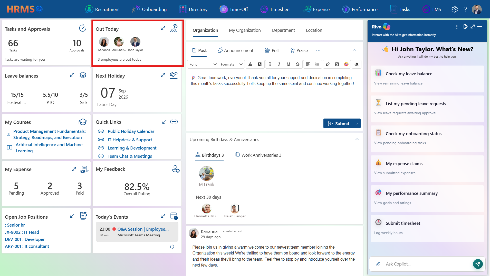
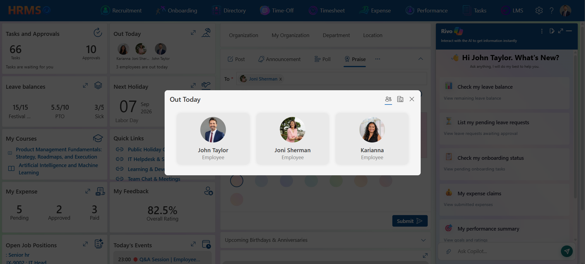
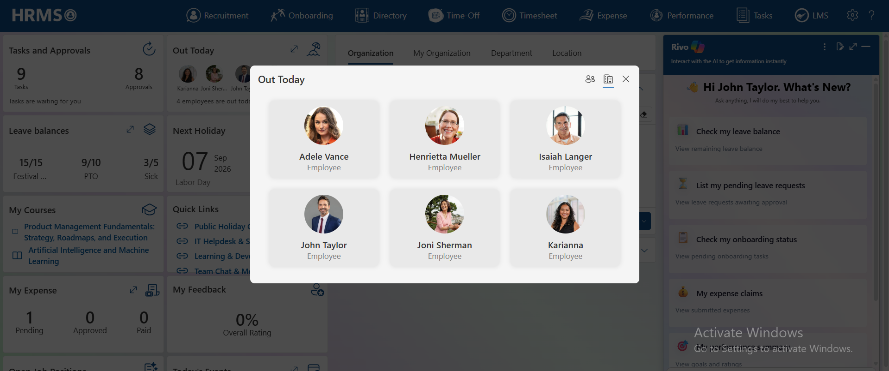
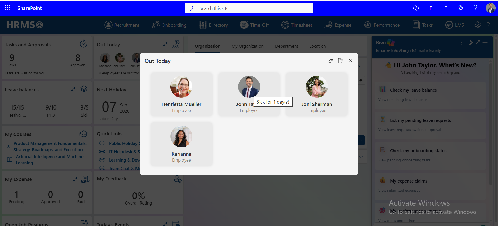

Home Page
This is the HRMS homepage, where all applications integrated within HRMS — including Recruitment Management (RM365), Employee Onboarding (EO365), Employee Directory (ED365), Time off Manager (TM365), Timesheet (TS365), Performance Management (PM365), Task 365, Learning Management System (LMS365) and Expense Tracker (ET365) — are displayed on the top bar with their respective icons and names. These applications are also visible below the top bar for easy access. Beneath this section, the user dashboard is displayed, providing a comprehensive overview and quick access to key information.
At a Glance
| Section | What it does |
| Task and Approvals | View a count of assigned tasks and pending approvals from all the applications and drill into details for each. |
| Out Today | See which employees currently have approved leave and are out today. |
| Leave Balances | Check available, used, and remaining PTO, Comp Off, and Sick Leave. |
| Next Holiday | View the date and name of the upcoming company holiday. |
| My Courses | Access assigned learning courses directly from the dashboard. |
| Quick Links | Jump straight to frequently used pages and features. |
| My Expense | Check the count of pending, approved, and paid expense claims. |
| My Feedback | View your overall feedback rating briefly. |
| Open Job Positions | See currently open requisitions with position ID and title. |
| Today's Events | View meetings and events scheduled for today, with time and duration. |
| Upcoming Birthdays & Anniversaries | See employee birthdays and work anniversaries coming up in the next 30 days. |
| Organization / My Organization / Department / Location Feed | Create Posts, Announcements, Polls, Praise, and 360 Feedback requests scoped to the organization, department, or location. |
Task and Approvals
The Tasks and Approvals card on the HRMS Home Page gives every user a single place to see everything waiting for their attention — open tasks across integrated apps and approval requests that need a decision.
At a Glance
| Element | What it does |
| Tasks and Approvals card | Shows a live count of assigned Tasks and pending Approvals directly on the Home Page. |
| Tasks tab | Lists every task assigned to the user, filterable by status and sortable by any column. |
| Approvals tab | Lists pending approval requests sent to the user, with the source app and an action to open each one. |
Opening the Tasks and Approvals Panel
- From the Home Page, locate the Tasks and Approvals card.
- The card displays the current count of assigned Tasks and pending Approvals, along with the message “Tasks are waiting for you” when items need attention.
- Click anywhere on the card to open the Tasks and Approvals panel as a full-screen overlay with two tabs: Tasks and Approvals.
- Click the circular refresh icon in the top-right corner of the card to reload the latest counts without opening the panel.
Tasks Tab
The Tasks tab opens by default and lists every task assigned to the user across HRMS-integrated apps.
Filter Tabs

Five tabs above the table let you narrow the list by status. The number next to each tab name is a live count of tasks in that state.
- All – every task regardless of status.
- Current – tasks that are active and in progress.
- Upcoming – tasks due in the future.
- Overdue –tasks past their due date.
- Completed – tasks that have been marked done.
Click any of the five tabs (All, Current, Upcoming, Overdue, Completed) to filter the table to that status.
Task Table Columns

| Column | Shows |
| Task Title | The task name, shown as a link that opens the full task record. |
| Project | The project the task belongs to, if it was created within a project. |
| Bucket | The workflow stage or status bucket the task currently sits in (for example, “To Do”). |
| Priority | The task's priority level (for example, Low, Normal, High), shown with a color-coded indicator. |
| Due Date | The date the task is due. |
| Assigned To | The person responsible for completing the task. |
| Created By | The person who created the task. |
| Created Date | The date the task was created. |
| Modified By | The person who last updated the task. |
| Modified Date | The date and time of the most recent update. |
| Source | The integrated app the task came from (for example, Task 365, Performance Management 365, or Timesheet 365), shown with that app's icon. |
| Action | An edit (pencil) icon used to open and update the task. |
Editing a Task
Clicking the edit (pencil) icon in the Action column opens the full task record in a detail panel.

- Task name – the editable title of the task.
- Assign – assigns or reassigns the task to a user.
- Label – an optional tag applied to the task.
- Bucket, Progress, and Priority – dropdowns for the task's workflow stage (for example, To Do), status (for example, Not Started), and priority (for example, Low).
- Start DateandDue Date – the task's scheduled dates.
- Notes –a free-text field, with a Show on card checkbox to display the note preview on the task card in list/board views.
- Checklist –add sub-items to track within the task; a progress indicator (for example, 1/1) shows how many are complete, and a Show on card checkbox surfaces the checklist on the task card.
- Attachments – a drag-and-drop area for adding files to the task.
- Comments –a comment thread at the bottom of the panel for discussion on the task
- Click the edit (pencil) icon in the Action column on the row of the task you want to update.
- Update any fields as needed — name, assignment, label, bucket, progress, priority, dates, notes, checklist, or attachments.
- Click Update to save your changes.
- Click the … (three-dot) menu at the top of the panel for additional actions: Clone Task, Move Task, Task History, Share link, or Delete.

Approvals Tab
The Approvals tab lists every approval request sent to the user, regardless of which integrated app it originated from.
- Click the Approvals tab at the top of the Tasks and Approvals panel.
- Review each request's Status and Due Date to see what needs attention first.
- Click the edit (pencil) icon in the Action column to open the request.
- Use the Entries dropdown at the bottom-right to change how many rows are shown per page (default 10).
- Use the page number and arrow controls at the bottom-right to move between pages when there are more approvals than fit on one page.
Approval Table Columns

| Column | Shows |
| Title | The name of the approval request, shown as a link. |
| Created | The date the approval request was created. |
| Modified | The date and time the request was last updated. |
| Modified By | The person who last updated the request. |
| Status | The current state of the request (for example, Pending). |
| Sent to | The person the request was routed to for approval. |
| Due Date | The date by which the request needs a decision. |
| Source | The integrated app the request came from (for example, Time Off Manager 365 or Expense 365), shown with that app's icon. |
| Action | An edit (pencil) icon used to open the request. |
Acting on an Approval

Clicking the edit (pencil) icon in the Action column opens an approval form specific to the request's source app. For example, a time-off request routed from Time Off Manager 365 opens a Leave Approval Form showing the request details — Title, Approver, Start Date, End Date, No of Days, Requested By, Leave Type, Request Date, and a Leave Status section — along with Approve and Reject buttons.
- Click the edit (pencil) icon on the row of the approval you want to act on.
- Review the request details shown in the approval form.
- Click Approve to approve the request, or Reject to decline it.
Out Today
The Out Today widget on the HRMS home page answers a question every manager and teammate asks at least once a day: who is unavailable right now? It surfaces, at a glance, the colleagues whose leave has been approved for the current date, so you can reassign work, reschedule a meeting, or simply stop waiting on a reply that is not coming until tomorrow.
The widget shows a compact avatar strip on the dashboard, and expands into a full panel where you can switch between your immediate team and the wider organization, and hover any person to see the type and duration of the leave they are on.
Viewing Out Today from the Home Page

The widget sits in the top row of the HRMS dashboard, alongside Task and Approvals. No action is needed to populate it — it refreshes with the current day's approved leave.
- Navigate to the HRMS Home Page.
- Locate the Out Today card. Profile photos of employees who are on approved leave today are displayed side by side, with each person's name beneath their photo.
- Read the summary line below the avatars — for example, 3 employees are out today — for the total headcount currently on leave.
Expanding the Out Today Panel
The dashboard card is deliberately compact. When more people are out than the card can comfortably display, or when you need to know why someone is out, expand the widget.
- Click the expand icon (⤢) in the top-right corner of the Out Today card.
- Review the expanded panel. Each employee is presented on an individual card showing their profile photo,name , and designation.
- Click the close icon (✕) at the top-right of the panel when you are finished, to return to the dashboard.
Switching Between Team and Organization Views
The expanded panel offers two scopes, controlled by the pair of icons in the top-right corner. The active view is marked with a blue underline.
Team View

- Click the people icon in the top-right of the expanded panel.
- View the narrower list of colleagues who are out today within your own team.
Organization View

- Click the building icon in the top-right of the expanded panel.
- View the complete list of employees across the organization who are on approved leave today. This list is typically longer and may wrap onto multiple rows of cards.
Checking Leave Type and Duration

Knowing that someone is out is useful. Knowing that they are out for one day rather than two weeks is what actually changes your plan.
- Hover the cursor over any employee card in the expanded panel.
- Read the tooltip that appears beside the card. It states the leave type and its duration — for example, PTO for 1 day(s).
Leave Balances
The Leave Balances card on the HRMS Home Page gives users a quick, at-a-glance view of their available leave across every leave type, and can be expanded into a full Leave Balance calendar view. This article covers both the card and the expanded panel.
At a Glance
| Element | What it does |
| Leave Balances card | Shows a scrollable strip of available/total balances, three leave types visible at a time. |
| Leave Balance panel | A full-screen view with summary tiles for every leave type plus a color-coded leave calendar. |
The Leave Balances Card
The card shows each leave type as an available/total fraction (for example, 5.5/10 for PTO). Since there are five leave types but only three fit on the card at once, the card scrolls horizontally.
| Leave Type | Balance shown |
| PTO (Paid Time Off) | Total available and used PTO balance. |
| Sick Leave | Total available and used Sick Leave balance. |
| Comp Off (off in lieu) | Total available and used Comp Off balance. |
| Festival Leaves | Total available and used Festival Leave balance. |
| Birthday Leave | Total available and used Birthday Leave balance. |
- From the Home Page, locate the Leave Balances card.
- Drag the scroll bar at the bottom of the card (or swipe, on touch devices) to bring the remaining leave types into view.
- Click the expand icon in the top-right of the card to open the full Leave Balance panel.
Leave Balance Panel
Clicking the expand icon opens the Leave Balance panel, which combines summary tiles for every leave type with a full leave calendar.
Summary Tiles
Five tiles across the top of the panel show the available/total balance for each leave type at once, with no scrolling needed:
- PTO
- Sick
- Comp off (off in lieu)
- Festival Leaves
- Birthday Leave
Calendar
Below the summary tiles, a calendar plots leave across the month, with a color-coded legend covering PTO, Sick, Comp off (off in lieu), Festival Leaves, Paternity Leave, and Birthday Leave.
- Use the My Calendar dropdown at the top-left to choose whose calendar is displayed.
- Use the back (‹) and forward (›) arrows to move to the previous or next period, or click Today to jump back to the current date.
- Use the Month,Week , and Day buttons in the top-right to switch how the calendar is displayed.
- Refer to the color-coded legend at the top of the calendar to identify which leave type a calendar entry represents.
- Click the menu icon (≡) in the top-right corner of the panel for additional options, or the X to close the panel and return to the Home Page.
Next Holiday
The Next Holiday card on the HRMS Home Page shows the single upcoming public holiday closest to today, and can be expanded into a full list of every upcoming holiday. This article covers both the card and the expanded list.
At a Glance
| Element | What it does |
| Next Holiday card | Shows the date and name of the next upcoming public holiday. |
| Upcoming Public Holidays list | A filterable, sortable, paginated list of every upcoming holiday, with its date, day of week, and location. |
The Next Holiday Card
The card displays the day and month, year, and name of the next upcoming public holiday (for example, 07 Sep 2026 – Labor Day).
- From the Home Page, locate the Next Holiday card.
- Read the date and holiday name shown on the card.
- Click the expand icon (↗) in the top-right of the card to open the full Upcoming Public Holidays list.
Upcoming Public Holidays List
Clicking the expand icon opens the Upcoming Public Holidays list as an overlay, showing every upcoming holiday rather than just the next one.
| Column | Shows |
| Name | The name of the holiday (for example, Labor Day, Columbus Day, Thanksgiving Day). |
| Date | The date the holiday falls on. |
| Day | The day of the week the holiday falls on. |
| Location | The office or site location the holiday applies to. |
- Type into the filter box beneath any column header (Name,Date , Day, or Location) to narrow the list.
- Click the sort arrow (↑) next to a column header to sort the list by that column.
- Use the Entries dropdown at the bottom-right to change how many rows are shown per page (default 10).
- Use the page number and arrow controls at the bottom-right to move between pages when there are more holidays than fit on one page.
- Click the X in the top-right of the overlay to close the list and return to the Home Page.
My Courses
The My Courses card on the HRMS Home Page gives users quick access to the learning courses assigned to them, without needing to open LMS directly.
At a Glance
| Element | What it does |
| My Courses card | Lists the courses currently assigned to the user, each as a direct link into the course. |
The My Courses Card
Each assigned course appears as a blue link with a book icon next to it. A graduation cap icon sits in the top-right of the card.
- From the Home Page, locate the My Courses card.
- Review the list of courses currently assigned.
- Click a course title to navigate directly to that course for further details.
Quick Links
The Quick Links card on the HRMS Home Page gives users one-click access to frequently used resources and pages. Since the card only has room for a few links at a time, it can be expanded to show the complete list.
At a Glance
| Element | What it does |
| Quick Links card | Shows a short list of frequently used links directly on the Home Page. |
| Quick Links panel | Shows the complete list of configured quick links in a pop-up overlay. |
The Quick Links Card
The card lists a handful of shortcut links, each shown with a chain-link icon. For example:
- Public Holiday Calendar
- IT Helpdesk & Support
- Learning & Development
- Team Chat & Meetings
- From the Home Page, locate the Quick Links card.
- Click any link on the card to go straight to that resource.
- Click the expand icon (↗) in the top-right of the card to open the full Quick Links list if you don't see the link you need.
Quick Links Panel
The card only shows the first few configured links. Clicking the expand icon opens the full Quick Links list as a pop-up, which can include additional links not shown on the card — for example, an Employee Email link that doesn't appear on the card itself.
- Click the expand icon on the Quick Links card to open the full list.
- Click any link in the list to navigate to that resource.
- Click the X in the top-right of the pop-up to close it and return to the Home Page.
My Expense
The My Expense card on the HRMS Home Page shows a running count of the user's expense claims by status, and can be expanded into a full, searchable list of every claim. This article covers both the card and the expanded panel.
At a Glance
| Element | What it does |
| My Expense card | Shows the count of expense claims that are Pending, Approved, and Paid. |
| My Expense panel | A full, filterable, sortable list of every expense claim, with amounts and status. |
The My Expense Card
The card shows three live counts:
- Pending –claims submitted and awaiting a decision.
- Approved – claims that have been approved but not yet paid.
- Paid –claims that have been reimbursed.
- From the Home Page, locate the My Expense card.
- Read the Pending, Approved, and Paid counts for a quick status check.
- Click the expand icon (↗) in the top-right of the card to open the full My Expense list.
My Expense Panel
Clicking the expand icon opens every expense claim in a detailed, searchable table.
| Column | Shows |
| Expense ID | The unique identifier for the claim (for example, ET#124). |
| Title | A short description of the expense (for example, Conference Hotel Stay). |
| Start Date | The date the expense was incurred, or the start of the expense period. |
| End Date | The end of the expense period. |
| Expense Type | The category of the expense (for example, Hotel, Food, Cab, Travel, Company). |
| Requested Amount | The amount originally submitted for reimbursement. |
| Approved Amount | The amount approved for reimbursement. |
| Currency | The currency the amounts are shown in (for example, USD). |
| Status | The claim's current state — Pending, Approved, or Paid — shown with a color-coded label (Pending in amber, Approved in green). |
- Type into the search box beneath any column header to filter claims by that field.
- Click the sort arrow (↑) next to a column header to sort the table by that column.
- Click the search icon in the top-right of the panel to search across all claims.
- Click the menu icon (≡) next to the search icon for additional list options.
- Use the Show Entries dropdown at the bottom-right to change how many rows are shown per page (default 10).
- Use the page number and arrow controls at the bottom-right to move between pages when there are more claims than fit on one page.
- Click the X in the top-right of the panel to close it and return to the Home Page.
My Feedback
The My Feedback card on the HRMS Home Page gives users a quick pulse check on their overall feedback rating, without needing to open the full feedback report.
At a Glance
| Element | What it does |
| My Feedback card | Shows the user's overall feedback rating as a single percentage. |
The My Feedback Card
The card displays one figure — the Overall Rating — as a percentage (for example, 82.5%).
- From the Home Page, locate the My Feedback card.
- Read the Overall Rating percentage shown on the card.
Open Job Positions
The Open Job Positions card on the HRMS Home Page gives users quick visibility into current openings, pulled from the Recruitment application. It can be expanded to view the complete list.
At a Glance
| Element | What it does |
| Open Job Positions card | Shows a short list of open requisitions by Position ID and Job Title. |
| Open Job Positions panel | Shows the complete list of open requisitions in a pop-up overlay. |
The Open Job Positions Card
Each row on the card is shown as a clickable link in the format Position ID : Job Title (for example, JX-9002 : IT Head).
- From the Home Page, locate the Open Job Positions card.
- Click any position link to view that job requisition.
- Click the expand icon (↗) in the top-right of the card to open the full Open Job Positions list.
Open Job Positions Panel
Clicking the expand icon opens every open requisition in a pop-up list, in the same Position ID : Job Title format shown on the card.
- Click the expand icon on the Open Job Positions card to open the full list.
- Click any position link in the list to view that job requisition.
- Click the X in the top-right of the pop-up to close it and return to the Home Page.
Today's Events
The Today's Events card on the HRMS Home Page shows the meetings and events scheduled for the current day, and can be expanded into a full, detailed list. This article covers both the card and the expanded panel.
At a Glance
| Element | What it does |
| Today's Events card | Shows the next event (or events) for today, with a shortcut to see more. |
| All Today's Events panel | Shows every event scheduled for today, with status, duration, meeting type, and organizer. |
The Today's Events Card
The card shows the next event's time, title, duration, and meeting platform.
If there's more than one event today, a link below the event (for example, “+ 1 more upcoming events”) shows how many additional events are scheduled.
- From the Home Page, locate the Today's Events card.
- Read the time, title, and duration of the next event.
- Click + N more upcoming events, or the expand icon (↗) in the top-right of the card, to open the full All Today's Events list.
- Click the refresh icon at the bottom of the card to reload today's events.
All Today's Events Panel
Clicking the expand icon or the “+ N more” link opens every event scheduled for today in a detailed pop-up.
- Date header –shows the full date (for example, Sunday, 23 August 2026).
- Summary bar – shows the total event count for the day, split into Active and Upcoming (for example, 2 Events • 1 Active • 1 Upcoming).
- Each event card shows the time, a color-coded statusbadge (for example, Upcoming), the title (often formatted as Session Name | App or Product | Location), theduration , the meeting type (for example, Microsoft Teams Meeting), and the Organizer.
- Click the expand icon on the Today's Events card, or the “+ N more upcoming events” link, to open the full list.
- Check the summary bar at the top for a quick count of today's total, active, and upcoming events.
- Review each event's time, status, title, duration, meeting type, and organizer.
- Click theX in the top-right of the panel to close it and return to the Home Page.
Organization Feed
The feed on the HRMS Home Page lets users share Posts, Announcements, Polls, and Praise. Four tabs control who sees the content: Organization, My Organization, Department, and Location. This article walks through each content type step by step, and also covers the Upcoming Birthdays & Anniversaries widget that sits alongside the feed.
At a Glance
| Element | What it does |
| Audience tabs | Choose whether content is published to the Organization, My Organization, Department, or Location. |
| Post | Share a free-form update using rich text, links, images, and emoji. |
| Announcement | Share a titled announcement with optional notification, acknowledgment, and auto-hide settings. |
| Poll | Ask a question with two or more options for people to vote on. |
| Praise | Recognize a colleague with a badge and a personal message. |
| 360 Feedback | Request, give, and track peer feedback across five views: Received, Given, Action, Feedback Request(s), and My Team. |
| Upcoming Birthdays & Anniversaries | See who has a birthday or work anniversary today and in the next 30 days. |
Audience Tabs
Before creating any content, choose which audience will see it using the four tabs above the feed:
- Organization – visible company-wide.
- My Organization – scoped to the user's own organizational unit.
- Department –scoped to a single department.
- Location – scoped to a specific office or site location.
Content Type Tabs
- Below the audience tabs, five content types are available: Post, Announcement, Poll, Praise, and 360 Feedback. When the feed panel is too narrow to show all five at once, the least recently used ones collapse into a … (more) menu — in the example captured, Praise stayed visible while 360 Feedback moved into the … menu, shown as a tooltip when hovered.
- Click any visible content-type tab (Post,Announcement , Poll, or Praise) directly.
- If the tab you want isn't shown, click the … (more) icon to reveal any hidden tabs, such as 360 Feedback.
Post
Post is the default tab and is used for general, free-form updates.
- Select the audience tab (Organization, My Organization, Department, or Location) you want to publish to.
- Click the Post tab (selected by default).
- Type your update into the text area.
- Use the formatting toolbar as needed — Font and Formats dropdowns, Bold, Italic, Underline, Strikethrough, text alignment, bullet list, a link tool, an image tool, and an emoji picker.
- Click Submit to publish the post.
Viewing Posts in the Feed
Once published, each post appears in the feed below the composer, showing the author's photo and name, the label “created a post,” how long ago it was posted (for example, 32 days ago), and the post body. For example:
Announcement
Announcement adds a title and delivery options on top of the same rich-text editor used for Posts.
- Click the Announcement tab.
- Enter a title in the “Please Enter Title of Announcement” field.
- Type the announcement body into the text area, using the same formatting toolbar as Post.
- Check Notification to notify employees when the announcement is published.
- Check Require Acknowledgement if recipients must confirm they've read the announcement.
- Check Hide After and set a date to automatically hide the announcement after that date.
- Click Submit to publish.
Poll
Poll lets you ask a question and collect votes from the selected audience.
- Click the Poll tab.
- Enter your question.
- Fill in the default option fields (for example, Team Lunch and Outdoor Activity). Click the + icon to add more options.
- Set a Poll Expires on date.
- Check Notify employees to alert people that the poll is live.
- Check Anonymous poll if votes should not be tied to a person's identity.
- Toggle Multiple Selection on if voters should be able to choose more than one option.
- Click Submit to publish the poll.
Praise
Praise lets you recognize one or more colleagues with a badge and a personal message.
- Click the Praise tab.
- Add one or more recipients in the To field.
- Select a badge from the carousel (for example, Courageous, Thank You, Innovative, or Award), using the left/right arrows to see more options.
- Enter your message in the Share your thoughts field.
- Select a Background color for the praise card from the color swatches shown.
- Click Submit to send the praise.
360 Feedback
- The 360 Feedback tab lets users request, give, and track peer feedback. It's organized into five sub-tabs, each shown with a small info (ⓘ) icon except My Team:
- Received – feedback other people have submitted about the user.
- Given –feedback the user has submitted about others.
- Action –feedback requests awaiting the user's action.
- Feedback Request(s) – requests the user has sent out for feedback.
- My Team – feedback activity across the user's team.
- On the Received tab, each piece of feedback appears as a card:
- Feedback From – the reviewer's photo, name, and job title, with a three-dot menu for more actions, an eye icon, and a report/document icon.
- Overall Rating – a star rating summarizing the feedback, alongside the date it was Requested On.
- Requested By –the photo, name, and job title of the person who requested the feedback, alongside the date it was Received On.
- Click the 360 Feedback tab.
- Click a sub-tab — Received, Given, Action, Feedback Request(s), or My Team — to switch views.
- Review each card's rating, requester, and dates.
- Use the Show Entries dropdown and the page number/arrow controls at the bottom-right to move through additional results.
- Click the expand icon (↗) at the top-right of the 360 Feedback panel for a full-screen view.
Upcoming Birthdays & Anniversaries
This widget sits alongside the feed and highlights employee birthdays and work anniversaries, split across two tabs.
- Birthdays – shows a running count (for example, Birthdays 3), any birthdays happening today with the person's photo, and a Next 30 days section listing who's coming up.
- Work Anniversaries – shows a running count, any anniversaries happening today, or the message “There are no work anniversaries today” when there aren't any, plus its own Next 30 days section.
- Click the Birthdays tab to see today's birthdays and who's celebrating in the next 30 days.
- Click the Work Anniversaries tab to see today's anniversaries and who's coming up in the next 30 days.
Rivo AI Assistant
Rivo is an AI assistant panel available from the HRMS Home Page that lets users ask questions in plain language and get information instantly, without navigating to each individual app.
At a Glance
| Element | What it does |
| Rivo panel | A chat panel where users can ask Rivo questions or pick a suggested prompt. |
| Suggested prompts | Ready-made shortcuts to common questions, each with an icon, title, and short description. |
The Rivo Panel
The panel opens with a greeting (for example, “Hi John Taylor. What's New?”) and the prompt “Ask anything, I will do my best to help you.” Below the greeting, a scrollable list of suggested prompts offers quick shortcuts into common questions. For example:
- Check my leave balance – View remaining leave balance
- List my pending leave requests – View leave requests awaiting approval
- Check my onboarding status – View pending onboarding tasks
- My expense claims – View submitted expenses
- My performance summary – View goals and ratings
- Submit timesheet
The list scrolls, so more suggestions are available beyond what's shown at first glance.
- From the Home Page, locate the Rivo panel.
- Click any suggested prompt to ask that question instantly.
- Scroll down within the panel to see additional suggested prompts.
- Type a question of your own into the input box at the bottom of the panel if you don't see a suggestion that fits.